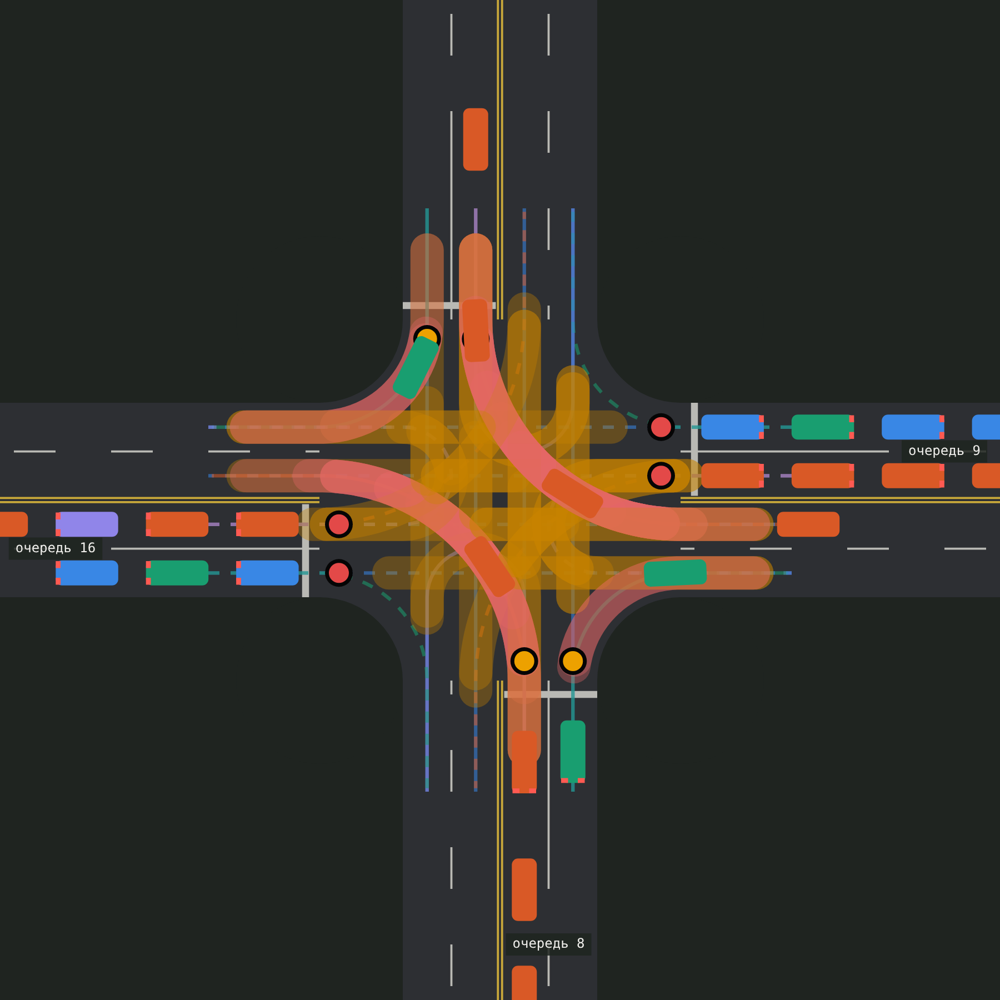
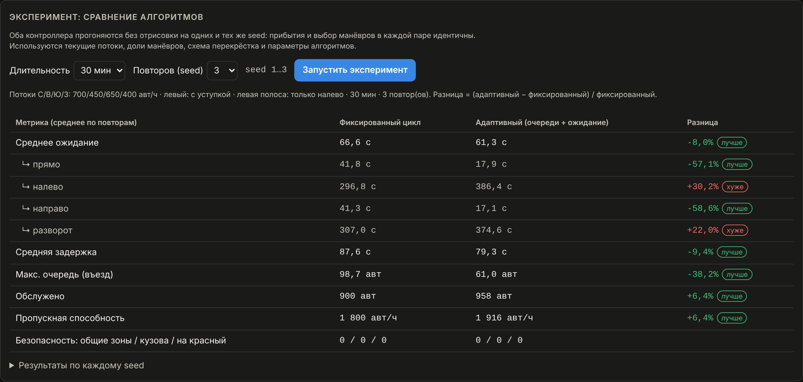
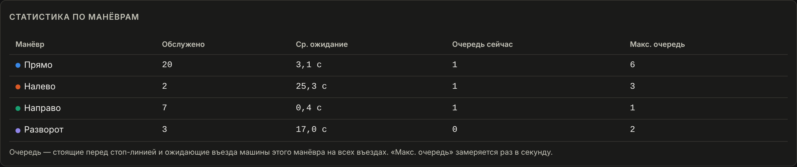
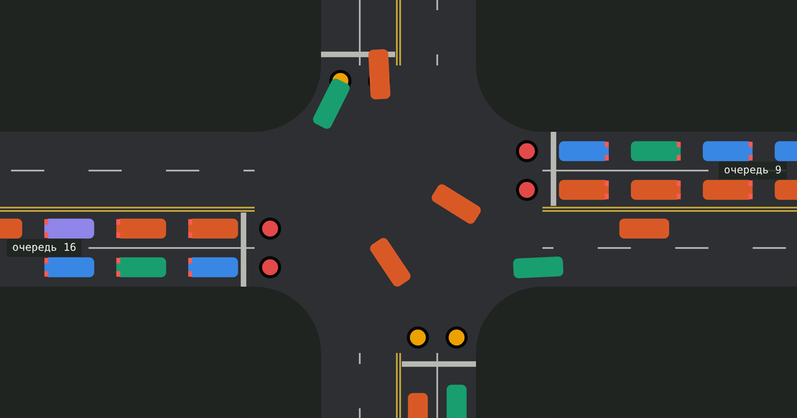
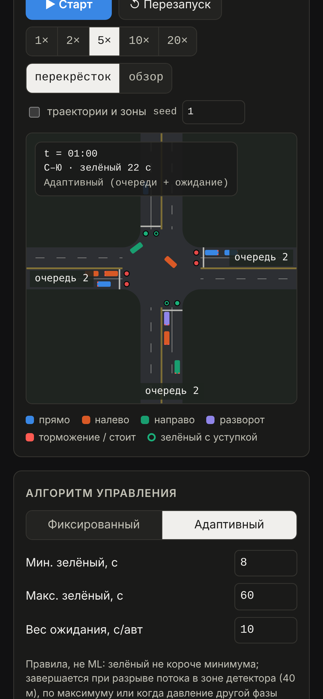

Проекты / SmartFlow AI
SmartFlow AI
Traffic Intersection Simulator
Модель городского перекрёстка в браузере: машины поворачивают по настоящим траекториям, светофор управляет каждым манёвром, а эксперименты честно сравнивают алгоритмы на одном и том же потоке.

Overview
Что это
SmartFlow AI — интерактивный симулятор четырёхстороннего перекрёстка. Машины приезжают случайно, но воспроизводимо: при одном и том же seed поток повторяется. Каждая машина получает маршрут: прямо, налево, направо или разворот. Едет она по модели следования IDM: держит дистанцию, тормозит перед поворотом и останавливается на красный.
Можно переключать алгоритм управления светофором, менять потоки и доли манёвров с каждой стороны, режим левого поворота и разметку полос. Отдельная панель прогоняет оба алгоритма на одинаковых условиях и сравнивает ожидание, очереди и пропускную способность, в том числе по каждому манёвру.
Название историческое. Адаптивный алгоритм здесь основан на правилах (очереди и время ожидания), машинного обучения в проекте нет, и сам симулятор это указывает.
Questions
На какие вопросы отвечает
Светофор — компромисс между потоками. Модель позволяет проверить решение до того, как его увидят водители.
- Насколько адаптивное управление сокращает ожидание по сравнению с фиксированным циклом
- Когда левому повороту нужна отдельная фаза, а когда хватает «зелёного с уступкой»
- Как общая полоса «налево + прямо» влияет на пропускную способность
- Какой манёвр страдает первым, когда поток растёт
- Где предел пропускной способности при заданной схеме
Key Features
Возможности
Car-following (IDM)
Каждая машина держит безопасную дистанцию и плавно разгоняется и тормозит по модели Intelligent Driver Model.
Turning trajectories
Повороты по кривым Безье, разворот по дуге. Скорость в повороте ограничена боковым ускорением, кузов поворачивается по касательной.
Conflict zones
Зоны, где пути могут пересечься, рассчитаны по прямоугольникам кузовов: пересечения, слияния и расхождения из одной полосы.
Safe entry
Машина въезжает, только если её зоны свободны, и сразу занимает их. Так исключены и столкновения, и взаимные блокировки.
Signal phases
Сигнал для каждого манёвра. Левый поворот с уступкой встречным или в отдельной фазе. План фаз проверяется автоматически.
Adaptive control
Минимальный и максимальный зелёный, разрыв потока на детекторе, «давление» очередей и ожидания, пропуск пустых фаз.
Per-maneuver stats
Обслужено, среднее ожидание и очередь отдельно для прямо, налево, направо и разворота.
Reproducible experiments
Оба алгоритма прогоняются на одних и тех же seed: поток машин в каждой паре идентичен.
Debug layer
Переключатель показывает траектории всех манёвров и зоны, которые сейчас заняты машинами.
Architecture
Как устроено

Ядро симуляции — чистый TypeScript без React и браузера, поэтому оно тестируется отдельно. Интерфейс только читает состояние и рисует его на Canvas. Сервера нет: всё работает в браузере и публикуется как статический сайт.
Experiment
Что показал эксперимент
Нагрузка 2200 авт/ч на четыре въезда, около 14% машин поворачивают налево и 7% разворачиваются, левый поворот с уступкой. По 30 минут на три seed для каждого алгоритма, цифры — среднее.

Адаптивный алгоритм заметно разгрузил основной поток. Но левые повороты с уступкой при таком встречном потоке почти не находят интервала и стали ждать ещё дольше: алгоритм отдаёт зелёный тем, у кого больше очередь.
Вывод модели: на этой нагрузке левому повороту нужна отдельная фаза. Её цена тоже видна: при выделенной левой полосе прямому потоку остаётся одна полоса и меньше зелёного, поэтому схему нужно подбирать под конкретные потоки.
Screens
Интерфейс



Testing
Как проверял
54 автотеста в репозитории
- Траектории непрерывны и плавные, поворот заканчивается в нужном направлении
- Конфликты найдены там, где пути пересекаются, и нет ложных
- В одной фазе никогда не горят зелёные двум конфликтующим потокам
- 8 комбинаций режимов: ноль пересечений кузовов и проездов на красный
- Час высокой нагрузки без взаимных блокировок
- Одинаковый seed даёт одинаковый результат
Публикация и браузер
- GitHub Actions запускает все тесты перед каждой публикацией: сломанная версия не выкладывается
- Проверка в браузере: кнопки, режимы, эксперимент, пустые состояния
- Светлая и тёмная тема, ширина экрана от 390 px
- Безопасность считается и в самом интерфейсе: счётчики видны во время работы
My Role
Что делал я
- Поставил задачу и требования: что моделировать, какие метрики считать, как сравнивать алгоритмы
- Разрабатывал с помощью ИИ (AI-assisted development): ставил задачи по этапам, проверял и правил результат
- Расширил модель поворотами, разворотами, конфликтными зонами и фазами по манёврам
- Запустил проект у себя и опубликовал на GitHub Pages с автопроверкой
Код написан не полностью вручную: большую часть я делал вместе с ИИ-ассистентом и отвечал за постановку задач, требования к честности модели и проверку.
Stack
Технологии
- TypeScript
- React 18
- Vite
- Canvas 2D
- SVG-графики без библиотек
- Intelligent Driver Model
- node:test
- GitHub Actions
- GitHub Pages